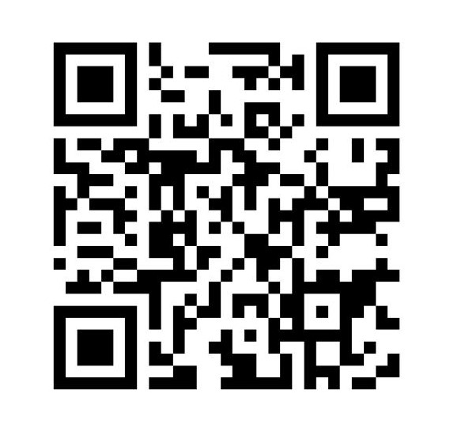

Welcome to our home
Connect to our guest Wi-Fi

Connect to Wi-Fi: Scan this QR code with your phone camera. If you're viewing this page on your phone, save the image and open it in your photo gallery to read the code.
Open in Safari
Safari can offer Join Network when you press and hold the QR code.
- Tap Copy page link.
- Open Safari and paste the link in its address bar.
- Press and hold the QR code, then choose Join Network.
Tip: You can also display this code for another phone to scan.